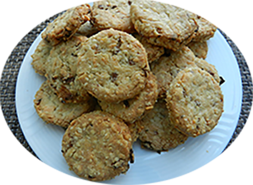

Biscuits salés & oignons

Pour 15 personnes
Préparation : 30 mn
Ingrédients
- 250 gr de farine
- 125 gr de beurre mou
- 1 oignon
- 1 jaune d’œuf
- 1oeuf entier
- 4 c. à soupe de persil ciselé
- 1/2 c. à café de levure chimique
- graines sésame
- 1 c. à café de poivre
Recette
- Pelez et hachez finement l'oignon.
- Mélangez la farine et la levure dans un saladier.
- Ajoutez le beurre mou et malaxez jusqu'à obtenir une pâte sableuse.
- Ajoutez l'œuf, le sel, le poivre, le persil ciselé et l'oignon haché
- Mélangez jusqu'à obtenir une boule de pâte bien homogène.
- Chemisez une plaque de four avec du papier sulfurisé.
- Aplatissez-les légèrement avec le dos d'une cuillère.
- Badigeonnez les biscuits avec le jaune d'œuf dilué dans un peu d'eau et parsemez de graines de sésame.
- Enfournez pendant 15 à 20 minutes jusqu'à ce que les biscuits soient dorés, four à 210°
- Laissez refroidir à la sortie du four.
- Conservez les biscuits dans une boîte hermétique jusqu'à la dégustation.
|